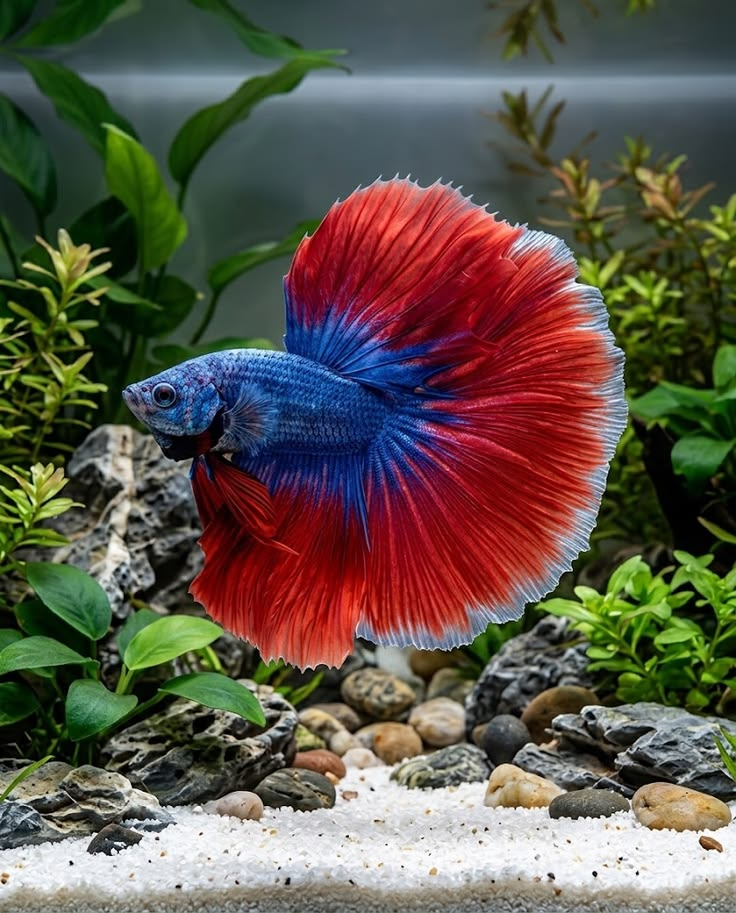

Produk Unggulan

Cupang Halfmoon
Rp 75.000

Discus Red Turquoise
Rp 250.000
Artikel & Kegiatan Terbaru
7 Maret 2026 | Penulis: Dharma Putra Maulana
Ikan Discus memerlukan kestabilan suhu dan tingkat keasaman (pH) air tertentu agar warnanya tetap cerah dan terhindar dari penyakit stres...
Read More
5 Maret 2026 | Oleh: Dharma Putra Maulana
Channa marulioides atau biasa dikenal dengan gabus hias memiliki corak bunga yang eksotis. Simak panduan pemberian pakan udang agar warna bar-nya tajam...
Read More